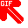
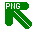

CSS CURSORS
Move the mouse pointer over each item to see the corresponding CSS cursor.
Keyword cursors
auto
default
none
pointer
context-menu
help
progress
wait
cell
crosshair
text
vertical-text
alias
copy
move
no-drop
not-allowed
grab
grabbing
all-scroll
col-resize
row-resize
n-resize
ne-resize
e-resize
se-resize
s-resize
sw-resize
w-resize
nw-resize
nwse-resize
nesw-resize
ew-resize
ns-resize
zoom-in
zoom-out
Custom image cursors
These samples demonstrate image formats, fallback lists, and custom hotspot coordinates.

url(red.gif), help
url(blue.cur), pointer
url(red.gif), url(blue.cur), auto

url(green.png), url(blue.cur), pointer
url(green.png) 5 2, pointer
url(green.png) 5 2, auto
url(green.png) 5 2, url(blue.cur), pointer